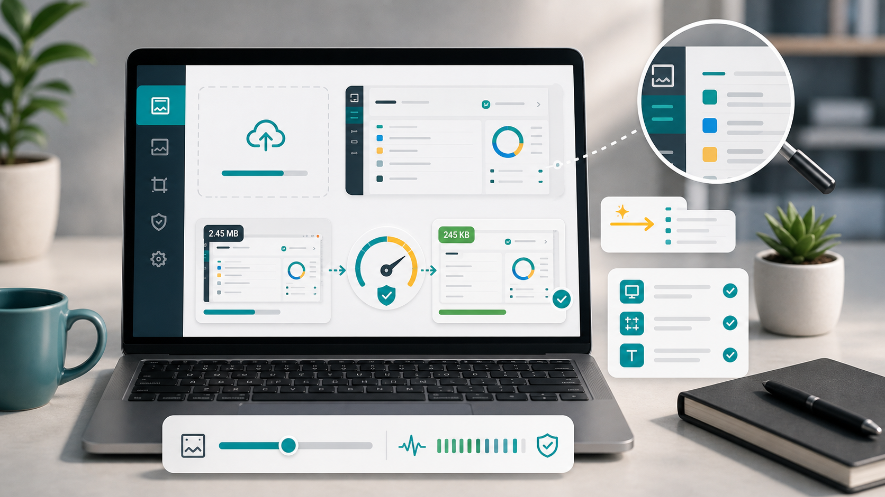

Screenshots
Compress screenshot without blur.

Screenshots are tricky because they often contain text, buttons, icons, and sharp edges. A setting that works nicely for a landscape photo can make a screenshot look fuzzy. If you are uploading tutorials, app screens, receipts, dashboards, or error messages, readability should come before extreme file savings.
PNG is often a good format for screenshots because it preserves sharp edges and text. If the screenshot has simple colors and clean shapes, PNG can stay reasonably small. If the screenshot is large or visually complex, WebP may reduce the file size while keeping the text readable. JPG can work for some screenshots, but it may create artifacts around letters and interface lines.
Do not shrink screenshots too far. Text becomes hard to read when the image is resized below the size where it will be viewed. For blog tutorials, match the screenshot width to your content area. If your article column is around 900 pixels wide, you may not need a 2500 pixel screenshot, but reducing it to 500 pixels could make the labels unreadable.
Crop before compressing. Remove browser chrome, empty desktop space, and unrelated side panels unless they matter. A tighter screenshot can be smaller and easier to understand. For error messages, crop around the message and the immediate context. For tutorials, keep enough surrounding interface so the reader knows where they are.
When compressing, compare the text areas first. Look at small labels, menu items, numbers, and icons. If letters look smeared or colored shadows appear around text, raise quality or switch format. For screenshots, a few extra kilobytes are often worth it.
Use the PNG compressor or the main image compressor to test PNG and WebP output. For format decisions, read compress PNG or convert to WebP. If the screenshot is for a website tutorial, also read image compression for SEO.
For software tutorials, consistency helps. Capture screenshots at the same browser zoom level, crop them in the same style, and export them at the width your article uses. Readers notice when one image is crisp and the next is blurry. A consistent screenshot workflow makes the whole guide feel more reliable.
If the screenshot includes private information, blur or remove it before compression. Do not rely on compression to hide details. Names, emails, order numbers, addresses, and account data can remain readable even in small images. Edit sensitive information out first, then compress the safe version.
For dark-mode screenshots, inspect them carefully after compression. Dark gradients and subtle shadows can show banding or blockiness. If the screenshot looks rough, try WebP at a higher quality or keep PNG. For very simple UI screens, PNG may stay small enough without much extra work.
When screenshots are part of a help article, file size is only one part of quality. Add useful surrounding text, captions where helpful, and alt text for meaningful images. A compressed screenshot should support the explanation, not force the reader to guess what matters.
If you are sharing screenshots by email or chat, create a version for that specific channel. A support screenshot can be cropped tightly around the error. A tutorial screenshot may need more surrounding context. The best screenshot is not always the full screen; it is the clearest view of the useful information, with the least distraction around it. That usually means a smaller, clearer file too.
Small cropping decisions make a real difference here.
Sources and further reading
- web.dev guide to choosing image formats explains how different formats suit different image types.
- Google Image SEO best practices covers useful image context and supported formats.